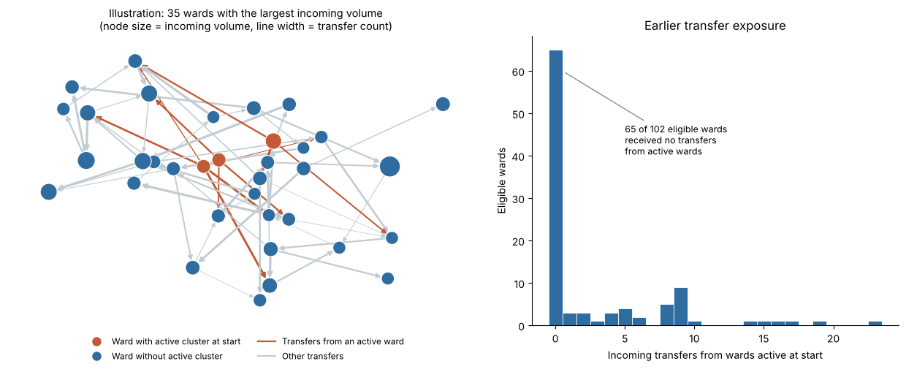
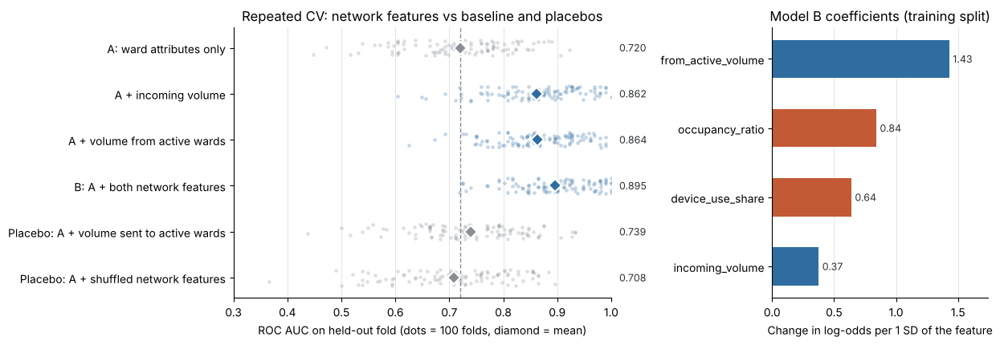
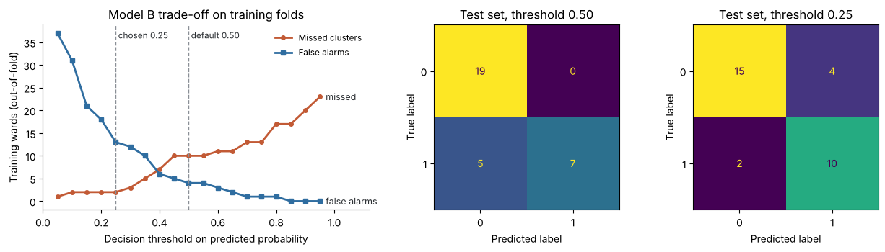

Can earlier patient transfers help predict new infection clusters?
Yes, in this synthetic hospital network. Adding two features from a directed ward-transfer network to a logistic regression raised ROC AUC from 0.693 to 0.904 and F1 from 0.435 to 0.737 on the same 31 test wards, and removed every false alarm.
Ward attributes only5 caught, 7 missed, 6 false alarms
With the transfer network7 caught, 5 missed, 0 false alarms
- Cluster caught
- Cluster missed
- False alarm
- Correctly not flagged
Point at a ward, or tab through the top row, to compare the two models for that ward.
What was asked
At the observation point, 18 of the 120 wards in a regional hospital group already have an active infection cluster. For the other 102, the project asks whether knowing where patients came from in the previous 14 days helps predict which wards report a new cluster in the following 14 days.
The baseline uses only what is known about each ward itself: bed occupancy and the share of patients with an invasive device. Wards that later had a cluster score higher on both on average, but the two groups overlap heavily.
The transfer network
Wards are nodes, and the 420 recorded transfer routes are directed links weighted by the number of patients moved (1 to 9). Two features come from the network. Both use only information available at the observation point:
- Incoming volume: every patient a ward received.
- Exposure: patients received from the 18 wards that already had a cluster. Most wards (65 of 102) received none.

Keeping the comparison fair
- Make one stratified 70/30 split of the 102 eligible wards: 71 for training and 31 for testing, the same for both models.
- Learn the feature scaling inside a pipeline, from the training wards only.
- Use the later outcome only as the target, never to build a feature.
- Score both models on accuracy, F1 for the cluster class, ROC AUC from predicted probabilities, and a confusion matrix.
Results on the test wards
| Model | Accuracy | F1 | ROC AUC | False alarms | Missed clusters |
|---|---|---|---|---|---|
| Ward attributes only | 0.581 | 0.435 | 0.693 | 6 of 19 | 7 of 12 |
| With the transfer network | 0.839 | 0.737 | 0.904 | 0 of 19 | 5 of 12 |
All three scores improve, so the result is clear rather than mixed. The network model still misses 5 of the 12 clusters.
Is the gain real?
A single split of 31 wards is fragile: one ward changing class moves F1 by about 0.06. I repeated the comparison over 100 cross-validation folds and added two placebo features that should not help.
| Features added to the ward attributes | Mean ROC AUC | Gain | Folds better than baseline |
|---|---|---|---|
| None (baseline) | 0.720 | ||
| Incoming volume | 0.862 | +0.142 | 96% |
| Exposure | 0.864 | +0.144 | 100% |
| Both network features | 0.895 | +0.175 | 98% |
| Placebo: patients sent to active wards | 0.739 | +0.019 | 59% |
| Placebo: network features shuffled | 0.708 | −0.013 | 34% |
- The gain is stable. The folds reuse the same wards, so this is a stability check rather than a significance test.
- Direction matters. Reversing the links barely helps, and shuffled features do not help at all, so the gain is not just an effect of adding columns.
- The model recovers the known rule. Its coefficients rank exposure first and incoming volume last, the same order as the published rule that generated the data.

Where it still fails
All five clusters the network model missed were in wards with little or no recorded exposure. Clusters that arise away from the transfer routes look like ordinary wards to it. Lowering the decision threshold to 0.25, chosen on training wards only, would cut missed clusters on the test set from 5 to 2 at the cost of 4 false alarms. That balance is a policy decision for an infection-prevention team, not a property of the model.

What this does not show
No causation
A transfer link is not an infection route. A better score cannot show that transfers caused clusters.
No clinical use
The data are small, synthetic and generated from these very features. Nothing here could guide decisions in a real hospital.
Uneven errors
False alarms divert screening, isolation beds and staff time. Missed clusters leave patients and staff unprotected, and they fall mostly on wards outside the main transfer routes.
Human review
Any flags should be reviewed by infection-prevention staff and ward clinicians, with errors audited across ward types.
Reflection
Building the comparison as a single pipeline made it fair by construction. The placebo checks were the most useful addition, because they turned "the score went up" into evidence that the gain depends on who sent the patients. The hardest part was judging the size of the gain from 31 test wards. With more time I would validate on a later time period, try exposure measures that follow longer transfer chains, and calibrate the probabilities.